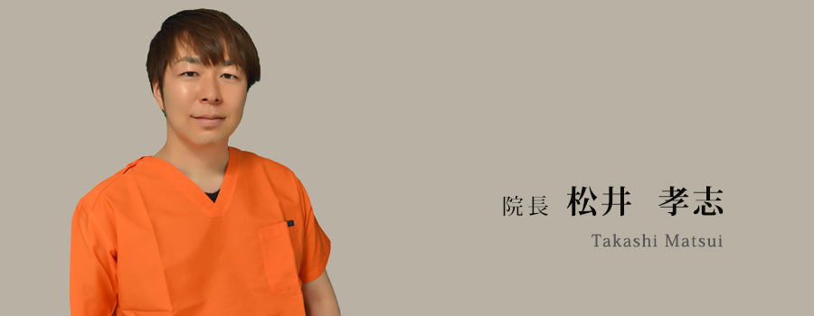

- ホーム
- ドクター・スタッフ紹介
ドクター・スタッフ紹介
院長

経歴
平成16年
- 大阪歯科大学 卒業
大阪市 北区 こばやし歯科クリニック
院長 小林 実 先生 師事
根管治療を中心に歯科治療全般及び原点を学ぶ - 医療法人 誠仁会 りょうき歯科クリニック
非常勤勤務〜常勤勤務
平成18年
- 医療法人 𠮷永歯科医院 勤務
理事長 𠮷永 勉 先生 師事
インプラント治療そして自由診療を中心に学ぶ
平成19年
小林 実 先生 監修のもとスタディーグループ「MDA」発足。初代会長就任。
平成20年
愛知県名古屋市中村区名駅 鬼頭歯科医院
院長 鬼頭 和義 先生 師事
咬合治療を学ぶ
平成23年
- アークデンタルクリニック
副院長・インプラント専門医として勤務
令和元年
- 天王寺 まつい総合歯科医院 開業
所属団体
- スタディグループ MDA 初代会長 現理事
- スタディグループ SIVA 会員
- 日本臨床歯科医学会 SJCD 大阪 会員
- 日本顎咬合学会 会員
受講コース
- SJCD エンドコース 修了
- SJCD ベーシックコース 修了
- JIADS ペリオコース 修了
- SIVA 咬合治療コース 修了
- SIVA 矯正治療コース 修了
- 矯正臨床研究会 矯正実習コース(吉川 仁育 先生) 修了
- MTM 矯正実習コース(相原 先生) 修了
- 床矯正研究会 床矯正ベーシックコース 修了
- マイクロエンド アドバンスコース(井澤 先生) 修了
- サイナスリフトコース(LiCCAインプラントセンター) 修了
- ソウルインプラントコース(𠮷永 勉 先生) 修了
ご挨拶
はじめまして。天王寺まつい総合歯科医院院長の松井です。
勝山は、幼少期からとてもゆかりがあります。私自身、勝山愛和第一幼稚園出身で、大阪教育大学付属天王寺中学・高等学校時代は剣道部で、よく近くの中西武道具店さんにお世話になっておりました。また、母が萬野屋さんのお肉を買ってきてくれてよく食べていた事を思い出します。
ご縁のあるこの勝山で皆様のお口の健康をサポートできる事に喜びを感じつつ、身が引き締まる思いでおります。
診療に対する想い
私の専門は咬合とインプラントで、インプラントにおいては平成18年からかれこれ10年以上、行ってまいりました。症例数やバリエーションは非常に豊富です。また、通常の先生方のインプラントシステムは、たいてい1つ、多くて2つ程度ですが、私の場合、ショート、エステティック、テッシュレベル(高、低)、即時埋入 即時荷重・早期荷重の5つを導入しております。私自身が同年代の先生方と共に主催してきたスタディグループもあり、さまざまな症例に対応可能です。
咬合とは、1.呼吸、2.循環、3.姿勢制御、4.発語、5.咀嚼の順で機能性を重要視されます。それに対し審美性はある程度は反比例する面もあり、あまりにも機能性を重要視しすぎると審美性が損なわれる場合があります。
そのため、機能性と審美性のバランスをとって治療を行っていくのが最良と考えます。
それから、他では受けることが難しい「足す噛み合わせ」の特殊治療も行っておりますので、歯を削らずに噛み合わせを改善したいという方は、ぜひ当院までご相談ください。私自身もこの治療を経験し、最良の噛み合わせ治療であると自負しております。
歯科治療の中でも難易度の高い根管治療に関しても、歯科医師になった当初より、根管治療で有名な先生のもと、ハイレベルな神経治療を学んでおりますので、再治療の少ない精密な根管治療を提供することが可能です。
いずれも患者さまの体の一部であるお口の健康を第一に考えた治療ですので、何かお悩み等がございましたら、お気軽に当院までご相談ください。
院長松井 孝志
歯科衛生士
経歴
平成9年
歯科助手
平成19年
歯科衛生士免許取得 一般開業医にて臨床従事
平成25年
歯科衛生士勉強会DH WORKS 発足
令和元年
天王寺 まつい総合歯科医院 入職
ご挨拶
はじめまして、歯科衛生士の秋永恵です。
私は、歯科医療に従事して24年経ちます。
今まで、様々な
「治した」
を見てきました。
これが治したといえるの？
もあれば、
これほどまでに治せたの？
もあります。
何を見ても
私なら…と置き換えてみる。
私が患者さんの立場なら…？
私の愛する人への施術なら？ と。
治した の基準は 常に患者さんの生涯利益にあると考えます。
よかったね。
嬉しいね。
安心だね。
そう心から喜べるものを。
私たちが満足する最高ではなく
患者さんにとっての最善を提供したいとかんがえています。
私たちは、学びを続け、より良い情報や技術を提供できるよう研鑽を惜しみません。
歯科衛生士として、全力で貴方の「健やかな成長」と、「美しいカラダ」,「穏やかな暮らし」のサポートをさせていただきます。
ご要望をお聞かせください。
貴方の為に熟慮し、貴方のこれからに寄り添う歯科衛生士で在りたいと思っています。
関西歯科衛生士勉強会
DHWORKS 代表
歯科衛生士秋永 恵